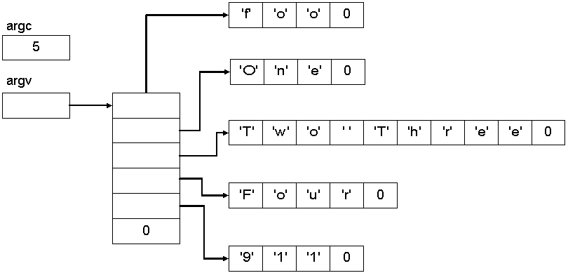

Usually, we see main prototyped as:
However, main is sort of overloaded to take parameters as well:int main(void);
As we've seen with arrays as parameters, the declarations above are equivalent./* These prototypes are the same */ int main(int argc, char *argv[]); int main(int argc, char **argv);
However, you will be required to use these names at all times:int main(int argc, char **argv); int main(int foo, char **bar); int main(int fred, char **barney); int main(int argv, char **argc); /* You're just asking for trouble here! */
so everyone will know exactly what you mean when they read your code.int main(int argc, char **argv);
int main(int argc, char *argv[])
{
int i;
for (i = 0; i < argc; i++)
printf("arg%i = %s\n", i, argv[i]);
return 0;
}
we would see something like this printed out:foo one two three 911
Another example:foo one two three 911
foo one "two three" four 911
Within an IDE like Visual Studio we might see:foo one two three four 911
because the IDE invokes the program using the entire path to the executable.E:\Data\Courses\Code\Chapter16\RTL\Debug\foo.exe one two three four 911
Another way of printing the arguments using pointers instead of subscripts:
int main(int argc, char **argv)
{
while (*argv)
printf("%s\n", *argv++);
return 0;
}
Quick check: Complete the table below. (Assume a 64-bit computer)
Expression Type sizeof(Expression) ----------------------------------------- argc int 4 argv *argv **argv
foo one "two three" four 911
Note: Because argv is an array of pointers to characters (strings), you can only pass strings to a program. If you want to use the parameter as a number, you will have to convert it from a string to a number yourself. See the Data Conversion section in the C Runtime Library, specifically the atoi function.
Imagine having to deal with hundreds of options like the gcc command options. This summary of options shows hundreds of options alone. And don't believe for a minute that they are only for command-line apps. All "real" games have hundreds of them:
There's actually another prototype for main which looks like this:
where env is similar to argv in that it is a pointer to a pointer to a char. These pointers point to the strings in the environment.int main(int argc, char **argv, char **env);
int main(int argc, char **argv, char **env)
{
while (*env)
printf("%s\n", *env++);
return 0;
}We can experiment with this in C:C:\> set type 'set' and press return
#include <stdio.h> /* printf */
#include <string.h> /* strchr, strcmp */
char *GetEnvironmentSetting(char **env, const char *key)
{
/* Strings are of the form: key=value */
while (*env)
{
/* Find the equal sign so we can terminate the key */
char *equal = strchr(*env, '=');
/* This should ALWAYS be non-NULL */
if (equal)
{
*equal = 0;
if (!strcmp(key, *env)) /* If key matches the current variable */
return equal + 1; /* The value is 1 after the '=' */
}
env++; /* Next key */
}
return NULL; /* Not found */
}
int main(int argc, char **argv, char **env)
{
char *key; /* The environment variable */
char *value; /* The value of the variable */
/* Must provide a key on the command line */
if (argc < 2)
{
printf("Must provide an environment string.\n");
return 1;
}
key = argv[1];
/* Get value from key/value pair */
value = GetEnvironmentSetting(env, key);
/* Was the string in the environment? */
if (value)
printf("%s is %s.\n", key, value);
else
printf("%s is not set.\n", key);
return 0;
}
Final notes on main. Not all implementations will support the environment pointer:
ANSI C:
Traditionally accepted implementations:int main(void); int main(int argc, char **argv);
Finally, there is a getenv function (stdlib.h) that you can call anywhere in your program that will return the value a specific environment string:int main(void); int main(int argc, char **argv); int main(int argc, char **argv, char **env); extern char *environ[]; /* External global variable */
This is almost identical to the GetEnvironmentSetting function implemented above and can be used without the parameter to main:char *getenv(char const *string);
#include <stdio.h> /* printf */
#include <stdlib.h> /* getenv */
int main(int argc, char **argv)
{
char *key; /* The environment variable */
char *value; /* The value of the variable */
/* Must provide a key on the command line */
if (argc < 2)
{
printf("Must provide an environment string.\n");
return 1;
}
key = argv[1];
/* Get value from key/value pair */
value = getenv(key);
/* Was the string in the environment? */
if (value)
printf("%s is %s.\n", key, value);
else
printf("%s is not set.\n", key);
return 0;
}
You can specify which function to call when your program terminates by using the atexit function. You need to include the stdlib.h header.
What is the type of func? What is the type of atexit?int atexit( void(*func)(void) );
This example simply returns from main, which causes the program to terminate:
void MyExit(void)
{
printf("In MyExit function...\n");
}
int main(void)
{
atexit(MyExit);
printf("In main...\n");
return 0;
}
This code actually calls exit to terminate the program prematurely (but safely):In main... In MyExit function...
void MyExit(void)
{
printf("In MyExit function...\n");
}
void SomeFn(void)
{
printf("In SomeFn calling exit...\n");
exit(0);
}
int main(void)
{
atexit(MyExit);
printf("In main...\n");
SomeFn();
return 0;
}
This program sets up several exit functions:In main... In SomeFn calling exit... In MyExit function...
void MyExit1(void)
{
printf("In MyExit1 function...\n");
}
void MyExit2(void)
{
printf("In MyExit2 function...\n");
}
void MyExit3(void)
{
printf("In MyExit3 function...\n");
}
void SomeFn(void)
{
printf("In SomeFn calling exit...\n");
exit(0);
}
int main(void)
{
atexit(MyExit1);
atexit(MyExit2);
atexit(MyExit3);
printf("In main...\n");
return 0;
}
Output:
In main... In MyExit3 function... In MyExit2 function... In MyExit1 function...
Note: The registered exit functions will only be called if the program terminates normally. If the program terminates abnormally (e.g. by calling abort, _exit, or performing some illegal operation like division by 0 or illegal memory access) the functions will not be called.
So, changing this:to this:void SomeFn(void) { printf("In SomeFn calling exit...\n"); exit(0); }Will prevent the exit functions from being called.void SomeFn(void) { printf("In SomeFn calling exit...\n"); abort(); }
Executing Programs from C Code
Suppose you have an executable that you want to use within your own program. How can you call it? The easiest way is with the system function from stdlib.h:
Using it in a program like this:int system(const char *command);
int main(void)
{
system("notepad");
return 0;
}
int main(void)
{
system("gcc main.c");
return 0;
}
int main(void)
{
char buffer[100];
printf("What command do you want to execute?\n");
fgets(buffer, 100, stdin);
system(buffer);
printf("This line will be printed after the system call above terminates.\n");
return 0;
}
E:\Data\Courses\Code\Chapter16\RTL\Debug>rtl
What command do you want to execute?
dir d:\ e:\
Volume in drive D is Applications
Volume Serial Number is 1084-18F9
Directory of d:\
04/10/2017 07:03a <DIR> borlandc
05/24/2017 11:22a <DIR> CygWin
12/06/2016 06:08p <DIR> Data
12/10/2016 05:56p 126,875 dirinfo.mcd
12/07/2016 03:37p <DIR> JBuilder4
07/19/2017 12:41p <DIR> Program Files
07/05/2017 10:25a <DIR> stuff
1 File(s) 126,875 bytes
6 Dir(s) 604,979,200 bytes free
Volume in drive E is Data
Volume Serial Number is DCA8-DC74
Directory of e:\
05/10/2017 01:59p <DIR> CVSRoot
07/19/2017 07:54a <DIR> Data
01/15/2017 09:49a 16,663 dirinfo.mcd
12/07/2016 12:36p <DIR> Documents and Settings
07/22/2017 10:06a <DIR> Download
02/05/2017 10:46a 29,607 Export_HKEY_CURRENT_USER_Software_Microsoft_DevStudio.reg
12/06/2016 02:51p <DIR> i386
07/15/2017 08:59a <DIR> images
02/01/2017 09:06a <DIR> Installs
12/07/2016 12:29p <DIR> Program Files
05/23/2017 12:44p 0 s1cc
05/23/2017 12:44p 0 s1cc.1
05/23/2017 12:44p 0 s1cc.2
05/23/2017 12:44p 0 s1cc.3
05/23/2017 12:44p 0 s1cc.4
02/01/2017 11:58a <DIR> Share
02/05/2017 10:39a <DIR> sp5
07/05/2017 04:10p <DIR> stuff
07/17/2017 06:59a <DIR> temp
03/01/2017 05:02p 25,761 TempMon1.gif
04/23/2017 08:43a <DIR> WebReaper
12/07/2016 12:39p <DIR> WINNTX
8 File(s) 72,031 bytes
14 Dir(s) 4,069,343,232 bytes free
This line will be printed after the system call above terminates.
The exec family of functions is similar to the system function, but has more capabilities.
execl execle execlp execlpe
execv execve execvp execvpe
Passing a (variable-length) list to exec under Windows:
#include <stdio.h> /* printf, perror */
#include <unistd.h> /* exec functions */
#include <errno.h> /* errno */
int main(void)
{
int retval;
/* Using a list only (must specify path) */
retval = execl("c:\\Windows\\system32\\notepad.exe", "c:\\Windows\\system32\\notepad.exe", "c:\\eula.1040.txt", NULL);
/* We only reach this if the call to _exec fails */
printf("Exec failed. retval = %i, errno = %i\n", retval, errno);
perror("execl");
return 0;
}
/* Using a list and getting path from the environment */
retval = execlp("notepad", "notepad", "c:\\somefile.txt", NULL);
#include <stdio.h> /* printf, perror */
#include <unistd.h> /* exec functions */
#include <errno.h> /* errno */
int main(void)
{
char *args[] = {"c:\\Windows\\system32\\notepad", "c:\\eula.1040.txt", NULL};
int retval;
/* Using a vector only (must specify path) */
retval = execv("c:\\Windows\\system32\\notepad", args);
/* We only reach this if the call to _exec fails */
printf("Exec failed. retval = %i, errno = %i\n", retval, errno);
perror("execl");
return 0;
}
/* Using a vector and getting path from the environment */
retval = execvp("notepad", args);
char *args[] = {"notepad", "c:\\somefile.txt", NULL};
execvp("notepad", args);
execlp("notepad", "notepad", "c:\\somefile.txt", NULL);
#include <stdio.h> /* printf, perror */
#include <unistd.h> /* exec functions */
#include <errno.h> /* errno */
int main(void)
{
const char *program = "c:\\Program Files\\Mozilla Firefox\\firefox.exe";
char *args[] = {"http://www.digipen.edu/",
"http://www.gamedev.net/",
"http://www.ddj.com/",
"http://www.microsoft.com/",
"http://www.opera.com/",
"http://www.acmqueue.com/",
"http://developers.slashdot.org/",
"http://www.artima.com/index.jsp",
"http://www.provantage.com/",
"http://www.tomshardware.com/",
"http://www.theinquirer.net/",
"http://arstechnica.com/",
NULL
};
int retval;
/* Using a vector only (must specify path) */
retval = execv(program, args);
/* We only reach this if the call to _exec fails */
printf("Exec failed. retval = %i, errno = %i\n", retval, errno);
perror("execl");
return 0;
}
_spawnl _spawnle _spawnlp _spawnlpe
_spawnv _spawnve _spawnvp _spawnvpe
Notes